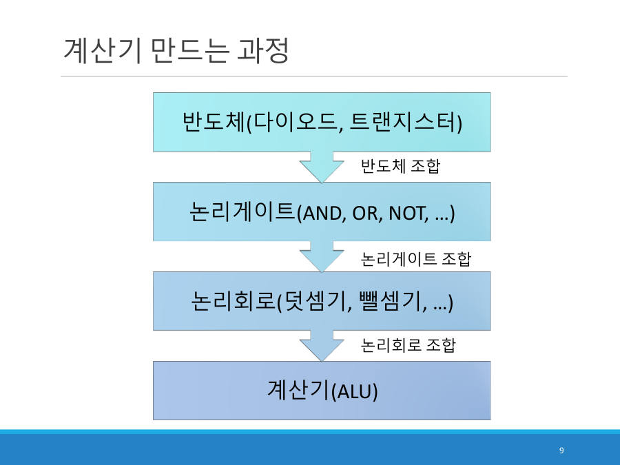

계산기는 레고처럼 쌓아서 만든다 ★★
CPU 안에서 실제로 계산을 하는 부품이 ALU(산술논리연산장치, 계산기)예요. 그런데 ALU도 처음부터 통으로 만든 게 아니라, 작은 블록을 단계별로 쌓아서 만들어요. 교수님은 "작은 블록으로 큰 구조물을 만드는 레고 조립"이라고 비유했어요.

| 단계 | 블록 | 설명 | 레고 비유 |
|---|---|---|---|
| ① | 반도체 다이오드, 트랜지스터 | 전기의 흐름을 조절하는 가장 작은 부품 | 1칸짜리 기본 블록 |
| ② | 논리 게이트 AND, OR, NOT … | 반도체를 조합해 0과 1의 규칙을 계산하는 회로 | 2칸, 4칸 블록 |
| ③ | 논리 회로 덧셈기, 뺄셈기 … | 게이트를 조합해 덧셈, 뺄셈 같은 계산을 하는 회로 | 벽, 지붕 조각 |
| ④ | 계산기 (ALU) | 논리 회로들을 모두 모은 CPU 속 계산기 | 완성된 건물 |
ALU는 입력선 둘(A, B), 제어선(C), 출력선(Y)으로 이루어져요. 각 선은 8개씩의 전기 신호(5V는 1, 0V는 0)예요.
- A, B : 계산할 두 수 (8비트씩)
- C : 제어 신호. 무슨 계산을 할지 고르는 8개의 선이에요. 순서는
C7 C6 C5 C4 C3 C2 C1 C0=+ - x / & | >> <<(덧셈, 뺄셈, 곱셈, 나눗셈, AND, OR, 오른쪽 이동, 왼쪽 이동) - Y : 계산 결과 (8비트)
ALU 안에는 덧셈기, 뺄셈기, AND, OR, 시프터 같은 회로가 모두 들어 있고, 제어 신호 C가 "이 중 어느 회로의 결과를 Y로 내보낼지"를 골라요. 어셈블리어 두 줄로 확인해 볼게요.
| ADD R1, 2, 3 (2와 3을 더해 R1에 저장) | MUL R2, 5, 5 (5와 5를 곱해 R2에 저장) | |
|---|---|---|
| A | 00000010 (2) | 00000101 (5) |
| B | 00000011 (3) | 00000101 (5) |
| C (제어) | 10000000 (C7 = 덧셈) | 00100000 (C5 = 곱셈) |
| Y (결과) | 00000101 (5) | 00011001 (25) |
덧셈이면 맨 왼쪽 제어선(C7) 하나만 1, 곱셈이면 왼쪽에서 세 번째(C5) 하나만 1이에요. 25는 16 + 8 + 1이라서 00011001이에요. 2023 기출 6.2번(ADD R3 R1 R2)의 A, B, C, Y 값도 위 왼쪽 열과 똑같아요.
ALU는 계산 버튼이 여러 개 달린 계산기예요. 두 숫자(A, B)를 넣고 버튼(C)을 하나 누르면, 그 버튼에 해당하는 회로의 결과가 Y로 나와요. CPU는 이 입력을 1초에 약 30억 번(3GHz) 바꿔 가며 계산해요.
이렇게 만든 회로들을 손톱만 한 칩에 촘촘히 모아 넣은 것이 집적회로(IC)예요. CPU 칩과 RAM 칩이 모두 집적회로이고, 지금은 나노미터 단위의 공정으로 만들어요.
계산기(ALU)는 반도체(다이오드, 트랜지스터)를 조합해 논리 게이트(AND, OR, NOT)를 만들고, 논리 게이트를 조합해 논리 회로(덧셈기 등)를 만들고, 논리 회로를 조합해 구성한다. 반도체를 잘 연결하면 AND, OR, NOT의 기본 논리 게이트를 구현할 수 있다.
잠깐 확인 — ADD 명령을 실행할 때 ALU의 제어 신호 C 중 1이 되는 선은 어느 것인가요?
맨 왼쪽 C7이에요. 순서가 + - x / & | >> <<이고 덧셈(+)이 첫 번째라서 10000000이에요.
화면을 가리고 "계산기는 레고처럼 쌓아서 만든다 ★★"을(를) 친구에게 설명하듯 한 문장으로 말해 보세요. 막히면 위의 빨간 칸만 다시 보고 넘어가요.